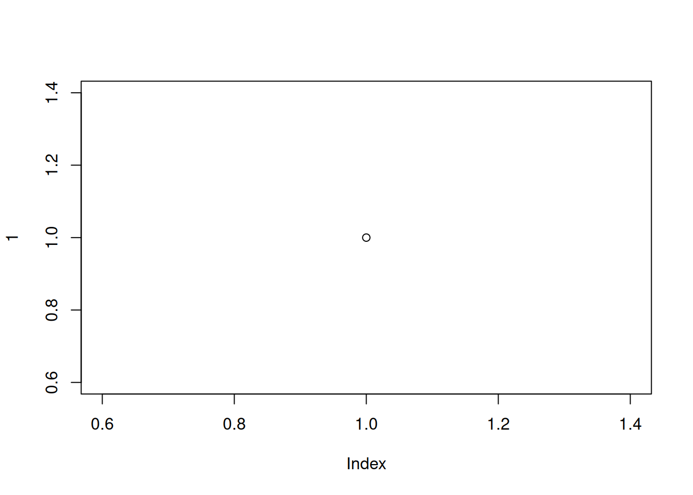

plot(1)

Bien que R ne soit pas nouveau, sa popularité s’est rapidement accrue au cours des dix dernières années environ (voir ici ). Il a été créé et développé à l’origine par Ross Ihaka et Robert Gentleman dans les années 1990 et la première version stable a été publiée en 2000. Aujourd’hui, R est maintenu par la R Development Core Team . Pourquoi R est-il devenu si populaire et pourquoi devriez-vous apprendre à l’utiliser ? Voici quelques raisons :
Toutes les raisons ci-dessus sont d’excellentes raisons d’utiliser R. Cependant, à notre avis, la plus grande raison d’utiliser R est qu’il facilite des pratiques de recherche robustes et reproductibles. Contrairement aux logiciels plus traditionnels de type “pointer et cliquer”, l’écriture de code garantit un enregistrement permanent et précis de toutes les méthodes que vous avez utilisées (et des décisions que vous avez prises) pour l’analyse de vos données. Vous pouvez ensuite partager ce code (et vos données) avec d’autres chercheurs, collègues ou évaluateurs qui pourront reproduire votre analyse à l’identique. C’est l’un des principes de la science ouverte . Nous aborderons d’autres sujets pour faciliter la science ouverte tout au long de ce livre, notamment la création de rapports reproductibles (Chapitre 6) et le contrôle des versions (Chapitre 7).
Dans ce chapitre, nous aborderons les points suivants :
Bonne chance et n’oubliez pas de vous amuser.
Pour démarrer, la première chose à faire est d’installer R. R est disponible gratuitement pour les systèmes d’exploitation Windows, Mac et Linux à partir du site web du Comprehensive R Archive Network (CRAN) . Pour les utilisateurs de Windows et de Mac, nous vous suggérons de télécharger et d’installer les versions binaires précompilées. Il existe des instructions assez complètes pour installer R pour chaque système d’exploitation (Windows, Mac ou linux).
Quel que soit le système d’exploitation que vous utilisez, une fois que vous avez installé R, vous devez vérifier qu’il fonctionne correctement. La manière la plus simple de le faire est de lancer R en double-cliquant sur l’icône R (Windows ou Mac) ou en tapant R dans la console (Linux). La console R devrait s’afficher et vous devriez pouvoir taper des commandes R dans la console après l’invite de commande >. Essayez de taper le code R suivant et appuyez sur la touche Entrée :
plot(1)Un graphique avec un seul point au centre devrait apparaître. Si c’est le cas, vous pouvez commencer. Si ce n’est pas le cas, nous vous suggérons de noter toutes les erreurs produites et d’utiliser ensuite votre moteur de recherche préféré pour résoudre le problème.
Il est fortement recommandé d’utiliser un logiciel d’Environnement de Développement Intégré (IDE) pour travailler avec R. Un IDE simple et extrêmement populaire est RStudio . Une alternative à RStudio est Visual Studio Code, ou VSCode . Un IDE peut être considéré comme un complément à R qui fournit une interface plus conviviale, intégrant la console R, un éditeur de scripts et d’autres fonctionnalités utiles (comme R markdown et l’intégration de Git Hub).
Vous devez installer R avant d’installer un IDE (voir Section 1.1.1 pour plus de détails).
Lorsque l’on se réfère à un IDE dans la suite du texte, il s’agit de RStudio ou de VScode.
RStudio est disponible gratuitement pour les systèmes d’exploitation Windows, Mac et Linux et peut être téléchargé à partir du site RStudio. Vous devez sélectionner la version ‘RStudio Desktop’.
VSCode est disponible gratuitement pour les systèmes d’exploitation Windows, Mac et Linux et peut être téléchargé à partir du site VS Code .
En outre, vous devez installer l’extension R pour VSCode. Pour faire de VSCode une véritable centrale pour travailler avec R, nous vous recommandons fortement d’installer également :
Plutôt que d’utiliser un IDE “tout-en-un”, de nombreuses personnes choisissent d’utiliser R et un éditeur de script séparé pour écrire et exécuter du code R. Si vous ne savez pas ce qu’est un éditeur de script, vous pouvez voir ça comme un logiciel de traitement de texte, mais spécialement conçu pour écrire du code. Par chance, de nombreux éditeurs de scripts sont disponibles gratuitement. N’hésitez donc pas à les télécharger et à les tester jusqu’à ce que vous en trouviez un qui vous convienne. Certains éditeurs de scripts ne sont disponibles que pour certains systèmes d’exploitation et tous ne sont pas spécifiques à R. Vous trouverez ci-dessous des suggestions d’éditeurs de scripts. C’est à vous de choisir celui qui vous convient le mieux : l’une des grandes qualités de R est que VOUS choisissez comment vous voulez utiliser R.
Un moyen léger mais efficace de travailler avec R est d’utiliser des éditeurs de texte avancés tels que :
Ces environnements sont plus puissants que de simples éditeurs de texte et sont similaires à RStudio :
Lorsque vous ouvrez RStudio pour la première fois, vous devriez voir la présentation suivante (elle peut être légèrement différente sur un ordinateur Windows).
La grande fenêtre (ou volet) de gauche est la Console. La fenêtre en haut à droite est le volet Environnement / Historique / Connexions et la fenêtre en bas à droite est le volet Fichiers / Graphiques / Paquets / Aide / Visiualiseur . Nous aborderons chacun de ces volets dans les paragraphes qui suivent. Vous pouvez personnaliser l’emplacement de chaque volet en cliquant sur le menu “Outils”, puis en sélectionnant Options globales –> Disposition des volets. Vous pouvez redimensionner les volets en cliquant sur le milieu des bords de la fenêtre et en le faisant glisser dans la direction souhaitée. Il existe une multitude d’autres façons de personnaliser RStudio.
La console est le cheval de bataille de R. C’est là que R évalue tout le code que vous écrivez. Vous pouvez taper du code R directement dans la console à l’invite de la ligne de commande, >. Par exemple, si vous tapez 2 + 2 dans la console, vous devriez obtenir la réponse 4 (avec un peu de chance). Ne vous préoccupez pas du [1] au début de la ligne pour l’instant.
Cependant, dès que vous commencez à écrire plus de code R, cela devient plutôt encombrant. Au lieu de taper le code R directement dans la console, il est préférable de créer un script R. Un script R est un simple fichier texte portant l’extension .R qui contient vos lignes de code R. Ces lignes de code sont ensuite introduites dans la console R, ligne par ligne. Pour créer un nouveau script R, cliquez sur le menu “Fichier”, puis sélectionnez Nouveau fichier –> Script R.
Vous remarquerez qu’une nouvelle fenêtre (appelée volet Source) apparaît en haut à gauche de RStudio et que la console se trouve désormais en bas à gauche. La nouvelle fenêtre est un éditeur de script et c’est là que vous écrirez votre code.
Pour transférer votre code de votre éditeur de script à la console, placez simplement votre curseur sur la ligne de code, puis cliquez sur le bouton “Exécuter” en haut à droite de la fenêtre de l’éditeur de script.
Vous devriez voir le résultat dans la fenêtre de la console. Si cliquer sur le bouton “Exécuter” devient fastidieux, vous pouvez utiliser le raccourci clavier “ctrl + entrée” (sous Windows et Linux) ou “cmd + entrée” (sous Mac). Vous pouvez enregistrer vos scripts R sous la forme d’un fichier .R en sélectionnant le menu “Fichier” et en cliquant sur “Enregistrer”. Notez que le nom du fichier dans l’onglet devient rouge pour vous rappeler que des modifications n’ont pas été enregistrées. Pour ouvrir votre script R dans RStudio, sélectionnez le menu “Fichier”, puis “Ouvrir le fichier…”. Enfin, il convient de noter que, bien que les scripts R soient enregistrés avec un nom de fichier .R il s’agit en fait de fichiers texte simples qui peuvent être ouverts avec n’importe quel éditeur de texte.
La fenêtre Environnement / Historique / Connexions contient de nombreuses informations utiles. Vous pouvez accéder à chaque composant en cliquant sur l’onglet approprié dans le volet.
L’onglet “Environnement” affiche tous les objets que vous avez créés dans l’environnement actuel (global). Ces objets peuvent être des données que vous avez importées ou des fonctions que vous avez écrites. Les objets peuvent être affichés sous forme de liste ou de grille en sélectionnant l’option dans le menu déroulant situé en haut à droite de la fenêtre. Si vous utilisez le format Grille, vous pouvez supprimer des objets de l’environnement en cochant la case vide située à côté du nom de l’objet, puis en cliquant sur l’icône de balai. Il existe également un bouton “Importer un ensemble de données” qui permet d’importer des données sauvegardées dans différents formats de fichiers. Cependant, nous vous conseillons de ne pas utiliser cette approche pour importer vos données car elle n’est pas reproductible et donc pas robuste (voir Chapitre 3 pour plus de détails).
L’onglet “Historique” contient une liste de toutes les commandes que vous avez saisies dans la console R. Vous pouvez rechercher dans votre historique la ligne de code que vous avez oubliée, renvoyer le code sélectionné dans la Console ou dans la fenêtre Source. En général, nous n’utilisons jamais cette fonction car nous nous référons toujours à notre script R.
L’onglet “Connexions” vous permet de vous connecter à diverses sources de données telles que des bases de données externes.
L’onglet “Fichiers” répertorie tous les fichiers et répertoires externes dans le répertoire de travail actuel de votre ordinateur. Il fonctionne comme l’explorateur de fichiers (Windows) ou le Finder (Mac). Vous pouvez ouvrir, copier, renommer, déplacer et supprimer les fichiers répertoriés dans la fenêtre.
L’onglet “Graphiques” est l’endroit où tous les graphiques que vous créez dans R sont affichés (sauf indication contraire de votre part). Vous pouvez “zoomer” sur les graphiques pour les agrandir à l’aide du bouton loupe et faire défiler les graphiques créés précédemment à l’aide des boutons flèches. Il est également possible d’exporter les graphiques vers un fichier externe à l’aide du menu déroulant “Exportation”. Les graphiques peuvent être exportés dans différents formats de fichiers tels que jpeg, png, pdf, tiff ou copiés dans le presse-papiers (bien qu’il soit probablement préférable d’utiliser les fonctions R appropriées pour ce faire - voir Chapitre 4 pour plus de détails).
L’onglet “Paquets” répertorie tous les paquets que vous avez installés sur votre ordinateur. Vous pouvez également installer de nouveaux paquets et mettre à jour les paquets existants en cliquant respectivement sur les boutons “Installer” et “Mettre à jour”.
L’onglet “Aide” affiche la documentation d’aide R pour chaque fonction. Nous verrons comment consulter les fichiers d’aide et comment rechercher de l’aide dans le Chapitre 2).
L’onglet “Visualiseur” affiche le contenu web local tel que les graphiques web générés par certains packages.

Contient :
Comprend :
Contient :
Le répertoire de travail est l’emplacement par défaut où R cherchera les fichiers que vous souhaitez charger et où il placera tous les fichiers que vous enregistrez. L’un des avantages de l’utilisation des projets RStudio est que lorsque vous ouvrez un projet, il définit automatiquement votre répertoire de travail à l’emplacement approprié. Vous pouvez vérifier le chemin d’accès de votre répertoire de travail en utilisant l’une des méthodes suivantes getwd() ou here() fonctions.
getwd()[1] "/home/julien/Documents/courses/biostats/livre/enfR"Dans l’exemple ci-dessus, le répertoire de travail est un dossier appelé “R_way” qui est un sous-dossier de “biostats” dans le dossier “courses” qui lui-même se trouve dans un dossier “Documents” situé dans le dossier “julien” qui lui-même se trouve dans le dossier “home”. Sur un ordinateur fonctionnant sous Windows, notre répertoire de travail comprendrait également une lettre de lecteur (c.-à-d. C:\home\julien\Documents\courses\biostats\R_way).
Si vous n’utilisez pas d’IDE, vous devez définir votre répertoire de travail à l’aide de la commande setwd() au début de chaque script R (ce que nous avons fait pendant de nombreuses années).
setwd("/home/julien/Documents/courses/biostats/R_way/")Cependant, le problème avec setwd() est qu’il utilise un chemin d’accès absolue spécifique à l’ordinateur sur lequel vous travaillez. Si vous souhaitez envoyer votre script à quelqu’un d’autre (ou si vous travaillez sur un autre ordinateur), ce chemin d’accès absolu ne fonctionnera pas sur l’ordinateur de votre ami/collègue, car la configuration de ses répertoires sera différente (il est peu probable que vous ayez une structure de répertoires /home/julien/Documents/courses/biostats/ sur votre ordinateur). Il en résulte un projet qui n’est pas autonome et qui n’est pas facilement transportable. Les IDE résolvent ce problème en vous permettant d’utiliser des fichiers relatif qui sont relatifs au chemin d’accès au fichier racine du projet. Le fichier racine du projet est simplement le répertoire qui contient le fichier .Rproj dans Rstudio (first_project.Rproj dans notre cas) ou le dossier de base de votre espace de travail dans VScode. Si vous souhaitez partager vos analyses avec quelqu’un d’autre, il vous suffit de copier le répertoire complet du projet et de l’envoyer à votre collaborateur. Il lui suffira alors d’ouvrir le fichier du projet et tous les scripts R qui contiennent des références à des chemins d’accès relatifs fonctionneront. Par exemple, disons que vous avez créé un sous-répertoire appelé data dans votre répertoire de projet racine, qui contient un fichier délimité au format csv appelé mydata.csv (nous aborderons les structures de répertoire plus loin dans Section 1.4). Pour importer ce fichier dans un projet RStudio à l’aide de la commande read.csv() (ne vous en préoccupez pas pour l’instant, nous aborderons cette question plus en détail dans Chapitre 3), tout ce que vous devez inclure dans votre script R est
dat <- read.csv("data/mydata.csv")Parce que le chemin du fichier data/mydata.csv est relatif au répertoire du projet, peu importe où votre collaborateur enregistre le répertoire du projet sur son ordinateur, cela fonctionnera toujours.
Si vous n’utilisez pas un projet RStudio ou un espace de travail VScode, vous devrez soit définir le répertoire de travail en fournissant le chemin complet de votre répertoire, soit spécifier le chemin complet du fichier de données. Aucune de ces deux options n’est reproductible sur d’autres ordinateurs.
ou
dat <- read.csv("/home/julien/Documents/courses/biostats/R_way/data/mydata.csv")Pour ceux d’entre vous qui souhaitent pousser plus loin la notion de chemins d’accès relatifs aux fichiers, jetez un coup d’œil à la fonction here() du paquet here 📦. La fonction here() vous permet de créer des chemins d’accès pour n’importe quel fichier par rapport au répertoire racine du projet, qui ne dépendent pas du système d’exploitation (fonctionne sur une machine Mac, Windows ou Linux). Par exemple, pour importer notre mydata.csv à partir du répertoire data il suffit d’utiliser :
Outre l’utilisation de RStudio Projects, il est également conseillé de structurer votre répertoire de travail de manière cohérente et logique afin de vous aider, vous et vos collaborateurs. Nous utilisons fréquemment la structure de répertoire suivante dans nos projets basés sur R.
Dans notre répertoire de travail, nous avons les répertoires suivants :
Racine - Il s’agit du répertoire de votre projet contenant votre fichier .Rproj. Nous avons tendance à garder tous les scripts R ou [Rq]md nécessaires à l’analyse/au rapport dans ce dossier racine ou dans le dossier scripts s’il y en a trop.
données - Nous stockons toutes nos données dans ce répertoire. Le sous-répertoire appelé données contient des fichiers de données brutes et uniquement des fichiers de données brutes. Ces fichiers doivent être traités comme s’ils étaient en lecture seule et ne doivent en aucun cas être modifiés. Si vous devez traiter/nettoyer/modifier vos données, faites-le dans R (et non dans MS Excel), car vous pourrez documenter (et justifier) toutes les modifications apportées. Toutes les données traitées doivent être sauvegardées dans un fichier séparé et stockées dans le fichier données_traitées . Les informations sur les méthodes de collecte des données, les détails du téléchargement des données et toute autre métadonnée utile doivent être sauvegardés dans un document texte (voir les fichiers README ci-dessous) dans le sous-répertoire meta_données.
fonctions - Il s’agit d’un répertoire facultatif dans lequel nous enregistrons toutes les fonctions R personnalisées que nous avons écrites pour l’analyse en cours. Celles-ci peuvent ensuite être importées dans R à l’aide de la fonction source().
scripts - Un répertoire optionnel où nous enregistrons nos documents R markdown et/ou les principaux scripts R que nous avons écrits pour le projet en cours. Ces documents ne sont pas enregistrés dans le dossier racine.
sortie - Les résultats de nos scripts R, tels que les graphiques, les fichiers HTML et les résumés de données, sont enregistrés dans ce répertoire. Cela nous aide, ainsi que nos collaborateurs, à distinguer les fichiers qui sont des sorties de ceux qui sont des fichiers sources.
Bien entendu, la structure décrite ci-dessus est celle qui nous convient le mieux la plupart du temps et doit être considérée comme un point de départ pour vos propres besoins. Nous avons tendance à avoir une structure de répertoires assez cohérente dans tous nos projets, car cela nous permet de nous orienter rapidement lorsque nous revenons à un projet après un certain temps. Cela dit, les besoins varient d’un projet à l’autre et nous ajoutons ou supprimons des répertoires en fonction des besoins.
Vous pouvez créer votre structure de répertoire à l’aide de l’explorateur Windows (ou Finder sur Mac) ou dans votre IDE en cliquant sur le bouton “Nouveau dossier” dans le panneau “Fichiers”.
Une autre approche est d’utiliser la fonction dir.create() dans la console R.
# créer un répertoire appelé 'données'
dir.create("données")Comme pour la plupart des choses de la vie, lorsqu’il s’agit de traiter des données et de les analyser, les choses sont tellement plus simples si vous êtes organisé. Une organisation claire du projet permet à la fois à vous (et surtout au futur vous) et à vos collaborateurs de donner un sens à ce que vous avez fait. Il n’y a rien de plus frustrant que de revenir à un projet des mois (parfois des années) plus tard et de devoir passer des jours (ou des semaines) à comprendre où tout se trouve, ce que vous avez fait et pourquoi vous l’avez fait. Un projet bien documenté, doté d’une structure cohérente et logique, augmente les chances de pouvoir reprendre le projet là où il s’est arrêté sans trop de difficultés, quel que soit le temps qui s’est écoulé. En outre, il est beaucoup plus facile d’écrire du code pour automatiser des tâches lorsque les fichiers sont bien organisés et portent des noms judicieux. Cela est d’autant plus vrai maintenant qu’il n’a jamais été aussi facile de collecter de grandes quantités de données qui peuvent être sauvegardées dans des milliers, voire des centaines de milliers de fichiers de données distincts. Enfin, un projet bien organisé réduit le risque d’introduire des bogues ou des erreurs dans votre flux de travail et, s’ils se produisent (ce qui est inévitable à un moment ou à un autre), il est plus facile de retrouver ces erreurs et de les traiter efficacement.
Il existe également quelques mesures simples que vous pouvez prendre dès le début d’un projet pour aider à maintenir les choses en bon état.
Un bon moyen de garder les choses organisées est d’utiliser les projets RStudio ou les espaces de travail VSCode, désignés sous le nom de projet. Un projet conserve tous vos scripts R, vos documents R markdown, vos fonctions R et vos données en un seul endroit. Ce qu’il y a de bien avec un projet est que chacun a son propre répertoire, son propre historique et ses propres documents sources, de sorte que les différentes analyses sur lesquelles vous travaillez sont complètement séparées les unes des autres. Cela signifie que vous pouvez très facilement passer d’un projet à l’autre sans craindre qu’ils n’interfèrent l’un avec l’autre.
Pour créer un projet, ouvrez RStudio et sélectionnez Fichier –> Nouveau projet... dans le menu. Vous pouvez créer un projet entièrement nouveau, un projet à partir d’un répertoire existant ou un projet à version contrôlée (voir le Chapitre 7 pour plus de détails à ce sujet). Dans ce chapitre, nous allons créer un projet dans un nouveau répertoire.

Vous pouvez également créer un nouveau projet en cliquant sur le bouton “Projet” en haut à droite de RStudio et en sélectionnant “Nouveau projet…”
Dans la fenêtre suivante, sélectionnez “Nouveau projet”.
Saisissez le nom du répertoire que vous souhaitez créer dans le champ “Nom du répertoire :” (nous l’appellerons premier_projet pour ce chapitre). Si vous souhaitez modifier l’emplacement du répertoire sur votre ordinateur, cliquez sur le bouton “Parcourir…” et naviguez jusqu’à l’endroit où vous souhaitez créer le répertoire. Nous cochons toujours la case “Ouvrir dans une nouvelle session”. Enfin, cliquez sur le bouton “Créer un projet” pour créer le nouveau projet.
Une fois votre nouveau projet créé, vous disposerez d’un nouveau dossier sur votre ordinateur contenant un fichier de projet RStudio appelé premier_projet.Rproj. Ce projet .Rproj contient diverses options de projet (mais vous ne devriez pas vraiment interagir avec lui) et peut également être utilisé comme raccourci pour ouvrir le projet directement à partir du système de fichiers (il suffit de double-cliquer dessus). Vous pouvez le vérifier dans l’onglet “Fichiers” de RStudio (ou dans Finder si vous êtes sur Mac ou dans l’Explorateur de fichiers sous Windows).
La dernière chose que nous vous suggérons de faire est de sélectionner Outils –> Options du Project... dans le menu. Cliquez sur l’onglet “Général” sur le côté gauche et modifiez les valeurs pour “Restaurer .RData dans l’espace de travail au démarrage” et “Sauvegarder l’espace de travail dans .RData à la sortie” de “Par défaut” à “Non”. Cela garantit que chaque fois que vous ouvrez votre projet, vous démarrez avec une session R propre. Vous n’êtes pas obligé de faire cela (beaucoup de gens ne le font pas), mais nous préférons commencer avec un espace de travail complètement propre chaque fois que nous ouvrons nos projets pour éviter tout conflit potentiel avec des choses que nous avons faites dans des sessions précédentes (ce qui conduit parfois à des résultats surprenants et à des maux de tête pour résoudre le problème). L’inconvénient est que vous devrez réexécuter votre code R à chaque fois que vous ouvrirez votre projet.
Maintenant que vous avez mis en place un projet RStudio, vous pouvez commencer à créer des scripts R (ou des documents R markdown /Quarto, voir Chapitre 6) ou tout ce dont vous avez besoin pour compléter votre projet. Tous les scripts R seront désormais contenus dans le projet RStudio et enregistrés dans le dossier du projet.
Les espaces de travail sont similaires aux projets RStudio. Vous devez cependant créer un nouveau dossier avec un fichier R (ou un fichier texte) et l’enregistrer en tant qu’espace de travail.
Le nom que vous donnez à vos fichiers a plus d’importance que vous ne le pensez. Nommer les fichiers est également plus difficile que vous ne le pensez. Pour qu’un nom de fichier soit “bon”, il faut qu’il soit informatif et relativement court. Ce n’est pas toujours un compromis facile et il faut souvent y réfléchir. L’idéal est d’éviter les éléments suivants !

Bien qu’il n’y ait pas vraiment d’approche standard reconnue pour nommer les fichiers (en fait il y en a une mais tout le monde ne l’utilise pas), il y a quelques points à garder à l’esprit.
Évitez d’utiliser des espaces dans les noms de fichiers en les remplaçant par des traits de soulignement ou des tirets. Pourquoi cela est-il important ? L’une des raisons est que certains logiciels de ligne de commande (en particulier de nombreux outils bioinformatiques) ne reconnaissent pas un nom de fichier comportant un espace et que vous devez vous livrer à toutes sortes de manigances en utilisant des caractères d’échappement pour vous assurer que les espaces sont traités correctement. Même si vous ne pensez pas utiliser un jour un logiciel de ligne de commande, il se peut que vous le fassiez indirectement. Prenez R markdown par exemple, si vous voulez rendre un document R markdown au format pdf en utilisant le paquet rmarkdown 📦 vous utiliserez en fait une ligne de commande \(\LaTeX\) sous le capot. Une autre bonne raison de ne pas utiliser d’espaces dans les noms de fichiers est que cela rend la recherche de noms de fichiers (ou de parties de noms de fichiers) à l’aide d’expressions régulières dans R (ou tout autre langage) beaucoup plus difficile.
Évitez d’utiliser des caractères spéciaux (par exemple @£$%^&*(:/)) dans vos noms de fichiers.
Si vous créez des versions de vos fichiers à l’aide de nombres séquentiels (par ex. fichier1, fichier2, fichier3 …). Si vous prévoyez d’avoir plus de 9 fichiers, vous devez utiliser 01, 02, 03, …, 10 afin de garantir que les fichiers soient listés dans le bon ordre. Si vous prévoyez d’avoir plus de 99 fichiers, utilisez 001, 002, 003, ….
Pour les dates, utilisez le format ISO 8601 AAAA-MM-JJ (ou AAAAMMJJ) afin de vous assurer que vos fichiers sont listés dans un ordre chronologique correct.
N’utilisez jamais le mot final dans un nom de fichier - il est extrêmement rare qu’il le soit !
Quelle que soit la convention de dénomination des fichiers que vous décidez d’utiliser, essayez de l’adopter rapidement, de vous y tenir et d’être cohérent.
Un petit mot sur l’écriture du code R et la création de scripts R. À moins que vous ne fassiez quelque chose de vraiment rapide et sale, nous vous suggérons de toujours écrire votre code R sous la forme d’un script R. Les scripts R sont ce qui permet à R d’être plus efficace. Les scripts R sont ce qui rend R si utile. Non seulement vous disposez d’un enregistrement complet de votre analyse, de la manipulation des données à la visualisation et à l’analyse statistique, mais vous pouvez également partager ce code (et ces données) avec vos amis, vos collègues et, surtout, lorsque vous soumettez et publiez votre recherche dans une revue. Dans cette optique, veillez à inclure dans votre script R toutes les informations nécessaires pour rendre votre travail reproductible (noms des auteurs, dates, plan d’échantillonnage, etc.). Ces informations peuvent être incluses sous la forme d’une série de commentaires # ou, mieux encore, en mélangeant code exécutable et narration dans un document R markdown (Chapitre 6). C’est aussi une bonne pratique d’inclure la sortie de la fonction sessionInfo() à la fin de n’importe quel script qui affiche la version de R, les détails du système d’exploitation et les paquets chargés. Une très bonne alternative est d’utiliser la fonction session_info() du paquet xfun 📦 pour un résumé plus concis de notre environnement de session.
Voici un exemple d’inclusion de méta-informations au début d’un script R
# Titre: Analyse de séries temporelles de consommation de lasagnes
# Objectif : Ce script effectue une analyse de série temporelle sur
# les plats de lasagnes que les enfants veulent manger chaque semaine.
# Les données sont des dénombrements de plats de lasagnes (rêvés) par semaine
# collectés à partir de 24 enfants à l'école "Repas-de-rêve"
# entre 2042 et 2056.
# fichier de données: lasagna_dreams.csv
# Auteur: Un. Estomac
# Coordonnées de contact: un.estomac@univ.repas.com
# Date de création du script: Fri Mar 29 17:06:44 2010 -----------------
# Date de dernière modification du script: Wed Sep 18 12:14:18 2024 ----
# paquets chargés
library(tidyverse)
library(ggplot2)
print("écrivez votre merveilleux code R ici")
# bonne pratique pour inclure des informations sur la session
xfun::session_info()Il ne s’agit que d’un exemple et il n’y a pas de règles strictes, alors n’hésitez pas à développer un système qui vous convienne. Un raccourci très utile dans RStudio est d’inclure automatiquement un horodatage dans votre script R. Pour ce faire, écrivez ts à l’endroit où vous souhaitez insérer votre horodatage dans votre script R, puis appuyez sur les touches ‘shift + tab’. RStudio convertira ts en date et heure actuelles et commentera automatiquement cette ligne avec un #. Un autre raccourci très utile de RStudio consiste à commenter plusieurs lignes de votre script avec le symbole #. Pour ce faire, sélectionnez les lignes de texte que vous souhaitez commenter et appuyez sur ‘ctrl + shift + c’ (ou ‘cmd + shift + c’ sur un mac). Pour décommenter les lignes, utilisez à nouveau ‘ctrl + shift + c’.
En plus d’inclure des métadonnées dans vos scripts R, il est également courant de créer un fichier texte séparé pour enregistrer les informations importantes. Par convention, ces fichiers texte sont nommés README. Nous incluons souvent un fichier README dans le répertoire où nous conservons nos données brutes. Dans ce fichier, nous indiquons la date à laquelle les données ont été collectées (ou téléchargées), la manière dont elles ont été collectées, des informations sur l’équipement spécialisé, les méthodes de conservation, le type et la version des machines utilisées (c’est-à-dire l’équipement de séquençage), etc. Vous pouvez créer un fichier README pour votre projet dans RStudio en cliquant sur le menu Fichier –> Nouveau fichier –> Fichier texte.
La façon dont vous écrivez votre code dépend plus ou moins de vous, bien que votre objectif soit de le rendre aussi facile à lire que possible (pour vous et pour les autres). Bien qu’il n’y ait pas de règles (ni de police du code), nous vous encourageons à prendre l’habitude d’écrire un code R lisible en adoptant un style particulier. Nous vous suggérons de suivre le R style guide de Google dans la mesure du possible. Ce guide de style vous aidera à décider où utiliser les espaces, comment indenter le code et comment utiliser les crochets [ ] et les parenthèses bouclées { }, entre autres choses.
Pour vous aider à formater le code :
styler 📦 qui inclut une extension RStudio vous permettant de reformater automatiquement le code sélectionné (ou des fichiers et projets entiers) d’un simple clic de souris. Vous pouvez trouver plus d’informations sur le paquet styler 📦, y compris comment l’installer ici . Une fois installé, vous pouvez sélectionner le code que vous souhaitez remodeler, cliquer sur le bouton “Extension” en haut de RStudio et sélectionner l’option “Style Selection”. Voici un exemple de code R mal formatéMettez maintenant le code en surbrillance et utilisez le paquet styler 📦 pour reformater
Pour produire un code joliment formaté
Ne soyez pas la personne qui perd des données et des analyses durement acquises (et souvent coûteuses). Ne soyez pas cette personne qui pense que cela ne m’arrivera jamais - ça vous arrivera ! Pensez toujours au pire scénario, à quelque chose qui vous donnera des sueurs froides la nuit, et faites tout ce qui est en votre pouvoir pour que cela n’arrive jamais. Pour être clair, si vous comptez copier vos précieux fichiers sur un disque dur externe ou une clé USB, ce n’est PAS une stratégie de sauvegarde efficace. Ces objets tombent souvent en panne lorsque vous les glissez dans votre sac à dos ou votre “sac de tous les jours” et que vous les trimballez entre votre bureau et votre domicile. Même si vous les laissez branchés sur votre ordinateur, que se passe-t-il lorsque le bâtiment brûle (nous avons bien dit le pire des cas !)?
Idéalement, vos sauvegardes devraient être hors site et incrémentielles. Heureusement, il existe de nombreuses options pour sauvegarder vos fichiers. La première chose à faire est de chercher dans votre propre institut. La plupart (toutes ?) des universités disposent d’une forme de stockage en réseau qui devrait être facilement accessible et qui est également étayée par un plan complet de reprise après sinistre. D’autres options incluent des services basés sur le cloud tels que Google Drive et Dropbox (pour n’en citer que quelques-uns), mais assurez-vous que vous ne stockez pas de données sensibles sur ces services et que vous êtes à l’aise avec les politiques de confidentialité souvent exorbitantes.
Si ces services sont très efficaces pour stocker des fichiers, ils ne sont pas vraiment utiles pour les sauvegardes incrémentielles. Pour retrouver les versions précédentes des fichiers, il faut souvent passer un temps fou à parcourir plusieurs fichiers nommés ‘final.doc’, ‘final_v2.doc’ et ‘final_utiliseceluila.doc’ etc. jusqu’à ce que vous trouviez celui que vous cherchiez. Le meilleur moyen que nous connaissons pour sauvegarder des fichiers et gérer différentes versions de fichiers est d’utiliser Git et GitHub. Pour en savoir plus sur la façon dont vous pouvez utiliser RStudio, Git et GitHub ensemble, consultez Chapitre 7.
De nombreuses personnes ont investi énormément de temps et d’énergie pour faire de R l’excellent logiciel que vous utilisez aujourd’hui. Si vous utilisez R dans votre travail (et nous espérons que vous le ferez), n’oubliez pas de citer non seulement R, mais aussi tous les paquets que vous avez utilisés. Pour obtenir la citation la plus récente pour R, vous pouvez utiliser la fonction citation().
citation()To cite R in publications use:
R Core Team (2024). _R: A Language and Environment for Statistical
Computing_. R Foundation for Statistical Computing, Vienna, Austria.
<https://www.R-project.org/>.
A BibTeX entry for LaTeX users is
@Manual{,
title = {R: A Language and Environment for Statistical Computing},
author = {{R Core Team}},
organization = {R Foundation for Statistical Computing},
address = {Vienna, Austria},
year = {2024},
url = {https://www.R-project.org/},
}
We have invested a lot of time and effort in creating R, please cite it
when using it for data analysis. See also 'citation("pkgname")' for
citing R packages.Si vous souhaitez citer un package particulier que vous avez utilisé pour votre analyse de données, vous pouvez également utiliser la fonction citation() pour obtenir l’information.
citation(package = "here")To cite package 'here' in publications use:
Müller K (2020). _here: A Simpler Way to Find Your Files_. R package
version 1.0.1, <https://CRAN.R-project.org/package=here>.
A BibTeX entry for LaTeX users is
@Manual{,
title = {here: A Simpler Way to Find Your Files},
author = {Kirill Müller},
year = {2020},
note = {R package version 1.0.1},
url = {https://CRAN.R-project.org/package=here},
}Selon nous, l’outil le plus utile pour la citation est le paquet grateful 📦 qui vous permet de générer les informations de citation dans un fichier, ainsi que de créer une phrase ou un tableau citant tous les paquets utilisés. Cela devrait devenir la norme dans tout manuscrit honnêtement. Voir Table 1 pour un exemple de résultat produit avec grateful.